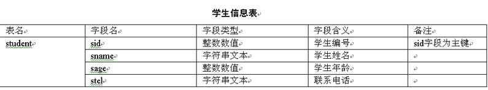

在超市中购买东西时，在很多的商品中是不容易找到自己想要的商品的，这时候通常就会找超市管理人员来帮忙解决。这就好像Java中的数据库编程JDBC。在Java程序中，如果希望对很多的数据进行操作时，通过使用数据库编程来解决。在本章中就来学习如何进行数据库编程。通过本章的学习，同学们应该完成如下几个目标。
- 对数据库有基本了解。
- 熟练掌握JDBC的编程步骤。
- 掌握如何在Java中进行数据库操作。
数据库在应用程序中占有相当重要的地位，几乎所有的系统都必须要有数据。数据库发展到现在已经相当成熟了，已由原来的Sybase数据库，发展到现在的SQL（Structured Query Language）Server、Oracal等高级数据库。
首先从数据库的介绍上来看一下什么是数据库。数据库的基本结构分三个层次，反映了观察数据库的三种不同角度。物理数据层是数据库的最内层，是物理存贮设备上实际存储的数据的集合。这些数据是原始数据，同时也是加工的对象，由内部模式描述的指令操作处理的位串、字符和字组成。
概念数据层是数据库的中间一层，是数据库的整体逻辑表示，指出了每个数据的逻辑定义及数据间的逻辑联系，是保存记录的集合。它所涉及的是数据库所有对象的逻辑关系，不是它们的物理情况，而是数据库管理员概念下的数据库。
逻辑数据层是用户所看到和使用的数据库，表示了一个或一些特定用户使用的数据集合，即逻辑记录的集合。
数据库应用架构包括两种不同形式的数据库应用程序架构模型，主要包括C/S两层结构的与三层（或多层）结构的两种。
两层结构数据库应用架构模型的特点是所有的用户输入、验证以及数据访问的功能都位于客户端中，一般来说客户端只适用于某一种特定的数据库。客户端与数据库服务器二者之间一般使用专用的协议进行联接，也有的情况是使用通用的数据库联接，如JDBC、ODBC等。
但是使用两层结构数据库也是存在很大缺点的。客户端与数据库服务器之间直接耦合，依赖度很高，无论哪边发生变化，都会直接影响到另一边。任何一种数据库服务器能够支持的联接数都是很有限的，如果客户端很多，而又让每个客户端独自占用一个数据库联接不利于提高数据库的利用效率，也有可能造成其他用户不能正常使用数据库。
提示：在现在的开发中，已经很少使用两层结构的数据库应用模型了，而都是使用更加优越的三层结构数据库应用模型。三层结构的数据库应用模型的特点主要是，客户端与数据库之间不直接耦合，而是通过中间层应用服务器进行耦合，当客户端或数据库需要发生变化时可以通过中间层隔离变化，减小影响。
一般情况下在三层结构中，客户端软件都由通用的浏览器来担任，这样在对应用进行部署时就省去了为每台机器安装专用客户端的麻烦。同时，当开发了新的应用后，客户端机器也不需要做任何改变，打开浏览器浏览的自然就是新的功能了。根据需要，中间层的应用服务器可以同时连接几个同构或异构的数据库服务器，而这些在客户端的使用者是感觉不到也不用关心的。每个客户端不必独占一个数据库连接，可以大大提高数据库连接与数据库的利用效率。
数据库又可以从基于不同的模型来分类，可以分为层次型数据库、网状型数据库、关系型数据库、面向对象型数据库。层次型数据库是一组通过链接而互相联系在一起的记录。树结构图是层次型数据库的模式。层次模型的特点是记录之间的联系是通过指针实现，表示的是对象的联系。其缺点是无法反映多对象的联系，并且由于层次顺序的严格和复杂，导致数据的查询和更新操作复杂，因此应用程序的编写也比较复杂。
网状数据库是基于网络模型建立的数据库。网络模型，是使用网格结构表示实体类型、实体间联系的数据模型。网状模型的特点是记录之间的联系通过指针实现，多对多的联系容易实现。缺点是编写应用程序比较复杂，程序员必须熟悉数据库的逻辑结构。
关系数据库是基于关系模型建立的数据库。关系模型由一系列表格组成，用表格来表达数据集，用外键（关系）来表达数据集之间的联系。现在应用最常见的就是关系数据库，在下一节也主要来介绍一下关系数据库。
提示：关系数据库是使用最广泛的数据库。
对象型数据库是建立在面向对象模型基础之上。面向对象模型中最基本的概念是对象和类。对象是现实世界中实体的模型化，共享同一属性集和方法集的所有对象构成一个类。类可以有嵌套结构。系统中的所有类组成一个有根、有向无环图，称为类层次。
JDBC就是Java DataBase Connectivity，Java数据库连接。JDBC主要完成下面几个任务。与数据库建立一个连接。向数据库发送SQL语句。处理数据库返回的结果。实用Java程序语言和JDBC工具包开发程序，是独立于平台和厂商的。JDBC就是将Java程序语言编写出来的程序，与数据库相连接。接下来，将详细讲述如何利用JDBC为程序连接数据库。
在JDBC数据库编程中经常要使用ODBC。所以，在讲述JDBC的驱动程序分类之前，首先介绍什么是ODBC。ODBC是指Open DataBase Connectivity，即开放数据库互连，它建立了一组规范，并且提供了一组对数据库访问的标准API（应用程序编程接口），这些API利用SQL来完成其大部分任务。ODBC也提供了对SQL的支持。
JDBC驱动程序由实施了这些接口的类组成，JDBC的总体结构有四个组件：应用程序、驱动程序管理器、驱动程序和数据源。将JDBC转换成ODBC驱动器，依靠ODBC驱动器和数据库通信。在这种方式下，ODBC驱动程序和桥代码必须出现在用户的每台机器中，这种类型的驱动程序最适合于企业网（这种网络上客户机的安装不是主要问题），或者是用Java编写的三层结构的应用程序服务器代码。
本地API一部分用Java来编写的驱动程序。这种类型的驱动程序把客户机API上的JDBC调用转换为Oracle、Sybase、Informix、DB2或其他DBMS的调用。像桥驱动程序一样，这种类型的驱动程序，要求将某些二进制代码加载到每台客户机上。
JDBC网络纯Java驱动程序将JDBC转换为与DBMS无关的网络协议，这种协议又被某个服务器转换为一种DBMS协议。这种网络服务器中间件能够将它的纯Java客户机连接到多种不同的数据库上，所用的具体协议取决于提供者。通常，这是最为灵活的JDBC驱动程序。所有这种解决方案的提供者，都提供适合于Intranet用的产品。为了使这些产品支持Internet，它们必须处理Web所提出的安全性、通过防火墙的访问等额外要求，几家提供者正将JDBC驱动程序，加到他们现有的数据库中间件产品中。
本地协议纯Java驱动程序类型的驱动程序将JDBC调用直接转换为DBMS所使用的网络协议，这将允许从客户机机器上直接调用DBMS服务器，是Intranet访问的一个很实用的解决方法。由于许多这样的协议都是专用的，因此数据库提供者自己将是主要来源。
目前市面上有很多种数据库，例如Oracle、Sybase、MySQL、MS SQL Server和MS Access等数据库。有些同学们就会认为这么多数据库，这里要学习数据库编程，是不是就要学习对应每一种数据库的编程方法呢。在JDBC之前是这样的，但是有了JDBC后，就变的非常容易。
使用JDBC在数据库编程中将起到非常重要的作用。首先程序员可以使用Java开发基于数据库的应用程序，在遵守Java语言规则的同时，可以使用标准的SQL语句访问任何数据库。如果数据库厂商提供较低层的驱动程序，程序员可以在自己的软件中，使用比较优化的驱动程序。
很多数据库系统带有JDBC驱动程序，Java程序就通过JDBC驱动程序与数据库相连，执行查询、提取数据等操作。Sun公司还开发了JDBC-ODBC bridge，用此技术，Java程序就可以访问带有ODBC驱动程序的数据库。目前，大多数数据库系统都带有ODBC驱动程序，所以，Java程序能访问诸如Oracle、Sybase、MySQL、MS SQL Server和MS Access等数据库。
在Java中进行数据库操作，除了需要JDBC编程外，还需要一个数据库的技术，那就是SQL技术。SQL技术是专门的，直接的对数据库操作的技术。
SQL是Structured Query Language的缩写，Structured Query Language翻译过来叫做结构化查询语言。SQL是一种专门用来与数据库通信的语言。与其他语言（如Java、Visual Basic这样的程序设计语言）不一样，SQL由很少的词构成，这是有意而为的。SQL能够很好地完成一项任务——提供一种从数据库中读写数据的简单有效的方法。
SQL是存在很多优点的，从整体的角度来说SQL有如下的优点。首先SQL不是某个特定数据库供应商专有的语言，几乎所有重要的DBMS都支持SQL，所以，此语言几乎能与所有数据库打交道。然后就是SQL简单易学。它的语句全都是由具有很强描述性的英语单词组成，而且这些单词的数目不多，这个就是它简单易学的主要原因。最后SQL看上去尽管很简单，但实际上是一种强有力的语言，灵活使用其语言元素，可以进行非常复杂和高级的数据库操作。
使用SQL能够完成数据库的创建、添加、删除、修改、查询等操作。在本节中就来简单的学习一下如何进行SQL操作。
查询操作是数据库操作中最常见的操作。在SQL中，使用Select语句可在需要的表单中检索数据，在进行检索之前，必须知道需要的数据存储在哪里，Select语句可由多个查询子句组成。查询操作的基本结构如下所示。
Select [all|distinct]
[into new_table_name]
From [表名|视图名]
(where 搜索条件)
Group by 把查到的按什么标准分组
(having 搜索条件)
Order by 按什么顺序排序 (升序|降序)
在查询操作的基本结构中，all是指明查询结果中可以显示值相同的列，同时all是系统默认值。distinct是指明查询结果中如有值相同的列，只显示其中的一列，对distinct来说，NULL被认为相同的值。into子句用于把查询结果存放到一个新建表中。
注意：select…..into句式不能与compute子句一起使用。新表是由select子句指定的列构成。
From子句指定需要进行数据查询的表。where子句指定数据检索的条件，以限制返回的数据。Group by子句指定查询结果的分组条件。having子句指定分组搜索条件，它通常与Group by子句一起使用。order by子句指定查询结果的排序方式。
除了查询操作外，还有其他操作。数据插入语句如下：--数据插入 insert into <表名> (列名) value (对应列的值)数据修改语句如下：
--数据修改 update <表名> set <列名>＝<表达式> where <条件>数据删除语句如下：
--数据删除
delete from {表名|视图名} where <条件子句>
在前面的学习中已经对数据库编程的基本知识有了一些基本介绍。在学习在Java中进行数据库操作之前，首先来学习一下如何创建数据库。这里以SQL Server数据库为例。
学习如何使用JDBC进行数据库开发之前，首先需要建立一个数据库。本节使用的是非常简单易用的SQL Server创建的数据库。例如创建一个记录学生信息的数据库，如表所示。
SQL脚本的写法如下：
create database student --创建数据库
go
use student --切换到刚刚创建的数据库
go
create table student
(
sid int primary key identity(1,1),
sname varchar(20) not null,
sage int not null,
stel varchar(20) null
)
前面四节的介绍，都是进行JDBC数据库编程的基础。在本节就来对如何进行JDBC编程进行详细的讲解。JDBC编程是有严格的步骤的，在该节来就一步一步的学习如何进行JDBC数据库编程。
从前面的介绍中可以看出，在使用JDBC连接特定的数据库之前首先要加载相应数据库的JDBC驱动类，本小节将向同学们介绍如何在开发中加载各种数据库的JDBC驱动类。
下面的代码片段说明了如何加载特定数据库的JDBC驱动类。try
{
//通过Class类的forName方法加载指定的JDBC驱动类
Class.forName("驱动类全称类名");
}
catch(java.lang.ClassNotFoundException e)
{
e.printStackTrace();
}
加载驱动程序后，就可以进行建立数据库连接。建立数据连接是通过调用java.sql.DriverManager类的getConnection方法来建立的，下面对该方法进行介绍。
public static Connection getConnection(String url, String user, String password) throws SQLException
参数url为指定数据库的连接字符串，参数user为要连接数据库的用户名，参数password为用户名对应的密码。如果没有用户名与密码，可以用两个空字符串来代替。此方法有可能抛出捕获异常java.sql.SQLException，因此在调用此方法时必须进行异常处理。
指定数据库的连接字符串由三部分组成，各部分之间用“:”分隔，如下所列。子协议指的是数据库的类型，例如可以是odbc，mysql或oracle等。子名称指的是数据源的名称或数据库的网络标识字符串。
例如，下面的代码片段以连接前面创建的ODBC数据源student为例，说明了如何获取与关闭数据库连接。
//声明连接引用
Connection con=null;
//创建数据库连接字符串
String url=”jdbc:odbc:student”;
try
{
//创建数据库连接
con=DriverManager.getConnection(url;"","");
//连接以后操作数据库的代码
}
catch(java.sql.SQLException e)
{
e.printStackTrace();
}
上述代码中第8行通过DriverManager类的getConnection方法获取了数据库连接，在该程序url中给出的子协议为odbc，数据源为前面所建立的student数据源。
在上一节中讲解了如何建立数据库连接，当成功地创建了数据库连接后，就可以使用连接对象提供的createStatement方法来进行数据库操作，这里的数据库操作是通过SQL语句来完成的，下面给出了该方法的签名。
public Statement createStatement() throws SQLException
创建了语句对象后就可以调用语句对象的executeUpdate方法来执行对数据库进行更新的语句了，下面给出了该方法的签名：
public int executeUpdate(String sql) throws SQLException
参数sql为要执行的sql语句对应的文本字符串，如“insert into student values('200801','Tom','23','123456789');”。该方法返回值表示成功地操作了多少条数据库记录。同样该方法也是可以发生异常的，所以也需要进行异常处理。
例如，下面的代码片段说明了如何创建语句对象与执行更新数据库的SQL语句。
try
{
//获取Statement对象
Statement stat=con.createStatement();//con为一个指向Connection对象的引用
//插入一条记录
stat.executeUpdate("insert into student values('200801','Tom', '23','123456789');");
//关闭语句对象
stat.close();
}
catch(java.sql.SQLException e)
{
e.printStackTrace();
}
在该程序中首先是使用createStatement方法创建了一个Statement对象，然后使用创建后的Statement对象调用executeUpdate方法来对数据库进行操作。executeUpdate方法的参数为一个SQL参数，将按照该SQL进行数据库操作。
在上一小节中学习了如何进行数据库操作，并进行了如何向数据库中插入记录。有时候经常需要来判断是否插入成功，这时候就需要来获取数据库中的信息。获取数据库中的信息是通过调用Statement对象的executeQuery方法来执行查询数据库的SQL语句。
public ResultSet executeQuery(String sql) throws SQLException
参数sql为要执行的SQL查询语句，例如“select * from student”，返回值为ResultSet类型的对象引用。ResultSet类型的对象中封装了查询的结果，可以调用其next方法移动指向结果集中记录的游标，下面给出了该方法的签名：
public boolean next() throws SQLException
该方法是获取数据库信息的最重要的方法。同时，ResultSet中还提供了很多获取当前记录指定字段值的getXxx方法，如表17-2所列。
在所有的getXxx方法中都有两个重载的方法，其中一个接收int类型的参数，参数值为要获取值的字段对应的列索引，例如“getString(1)”将返回第一列的字符串内容。另一个接收String类型的参数，参数值为要获取值的字段对应的列名称，例如“getString("sid")”将获取sid列的字符串内容，并且所有的getXxx方法都有可能抛出java.sql.SQLException捕获异常，因此在调用时要进行异常处理。
对数据库进行并发操作时，为了避免由于并发操作带来的问题，一般要将同一个任务中对数据库的增、删、改、查操作编写到一个事务中，同一个事务中的所有操作要么全部执行成功，要么都不执行。因此JDBC也提供了对事务开发的支持，本节将向同学们介绍JDBC中有关事务开发的知识。
事物是SQL中的单个逻辑工作单元，一个事务内的所有语句被作为整体执行，遇到错误时，可以回滚事务，取消事务所作的所有改变，从而可以保证数据库的一致性和可恢复性。
一个事务逻辑工作单元必须具有以下四种属性，包括原子性、一致性、隔离性和永久性。原子性是指一个事务必须作为一个原子单位，它所作的数据修改操作要不全部执行，要不全部取消。一致性是指当事务完成后，数据必须保证处于一致性的状态。隔离是指一个事务所作的修改必须能够跟其他事务所作的修改分离开来，以免在并发处理时，发生数据错误。永久性是指事务完成后，它对数据库所作的修改应该被永久保持。
进行事务操作主要使用Connection对象中的三个方法。setAutoCommit方法是指将此连接的自动提交模式设置为给定状态。如果参数autoCommit的值为true，则每执行一句SQL命令将自动被作为单个事务提交；否则，其将所有SQL语句聚集到一个事务中，直到调用commit方法或rollback方法为止，其默认值为true。
commit方法是指提交当前的事务，并自动开始下一个事务。执行此方法后，会释放此Connection对象当前持有的所有数据库锁，同时要注意此方法只应该在自动提交模式被禁用的情况下使用。
rollback方法是指回滚当前的事务，并自动开始下一个事务。执行此方法后，会释放此Connection对象当前持有的所有数据库锁，同时要注意此方法只应该在自动提交模式被禁用的情况下使用。
【提示】由于JDBC的编程步骤比较多，有些同学们是很难全部记下来的，经常会由于没有做其中一步而造成程序发生错误。所以这里再来简单的说一下JDBC的编程步骤。
（1）创建数据库
因为很多数据库操作都是指定某一个数据库来进行操作的，所以在进行数据库编程前要首先建立一个数据库。如何创建库是会因为数据库的不同而不同的。同学们可以根据需求来相应的学习特定的一种数据库。
（2）创建数据源
创建数据源是数据库操作中最容器丢的一步，也是最难发现的一步。很多同学们发现程序发生错误会，都会首先去找程序中有什么错误，从而很难发现没有创建数据源的错误。创建数据源中将为数据源起一个名字，同学们在进行该步操作时一定要起一个容易记住的名字，因为在程序中还要用到该名称。
（3）编写程序
JDBC数据库编程剩下的步骤都是在编写程序中的。在编写程序中也是不能丢掉必要步骤的。首先要加载驱动，根据数据库的不同而加载不同的驱动。然后就是建立数据库连接，接下来就是使用SQL语句进行数据库操作。最后就是获取信息。
在本章中首先对数据库、JDBC和SQL进行了简单的介绍，这些都是Java中进行数据库编程的基础。本章对这些知识的讲解是很简短，详细教程可网上搜索数据库教程进行系统的学习。